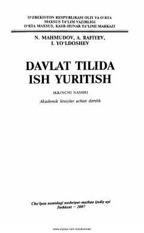

DTDavlat tilida rasmiy hujjatlar tuzish va ish yuritish qoidalarini o‘rgatuvchi darslik.
Ushbu darslik akademik litseylar va oliy o‘quv yurtlari talabalari uchun davlat tilida ish yuritish asoslari, rasmiy-idoraviy uslub me’yorlari va hujjat turlarini to‘g‘ri tuzish ko‘nikmalarini o‘rgatishga bag‘ishlangan. Kitobda yozma nutq savodxonligini oshirish, matn yaratish va uni ijodiy o‘zgartirish yo‘llari nazariy hamda amaliy misollar yordamida yoritib berilgan.